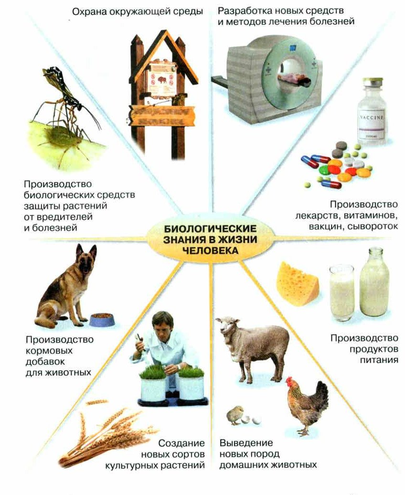
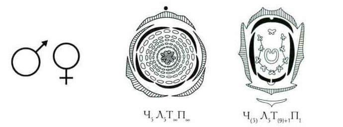

Роль биологии в познании мира и в практической деятельности человека
Человек узнаёт мир с первых дней жизни. Но особенно важно научное познание. Биологи исследуют процессы и явления в живой природе.
Открытия биологии помогают людям в медицине, сельском хозяйстве, промышленности. Благодаря им лечат и предупреждают болезни — даже те, что раньше считались неизлечимыми.
Учёные изучили, как устроены и как работают живые организмы, — и это подсказало новые решения в технике и строительстве.
А ещё биология помогает производить продукты питания, искать новые источники энергии и охранять природу (рис. 13). Всё это — биологические знания в жизни человека.
С первых дней жизни человек познаёт окружающий его мир. Но особое значение для человека имеет научное познание окружающего мира. Биологические исследования проводятся с целью изучения различных процессов и явлений, протекающих в живой природе.
В биологии новые открытия создают базу для множества практических достижений в медицине, сельском хозяйстве, промышленности и других областях человеческой деятельности. Открытия современной биологии позволяют выработать эффективные пути лечения и профилактики различных болезней, в том числе и тех, которые раньше считались неизлечимыми. Изучение строения и принципов работы различных систем живых организмов помогли найти оригинальные решения в технике и строительстве. Биология также оказывает значительное влияние на решение таких важных проблем, как производство продуктов питания, поиск новых источников энергии, охрана окружающей среды и др. (рис. 13).
На рис. 13 — биологические знания в жизни человека: охрана окружающей среды; разработка новых средств и методов лечения болезней; производство лекарств, витаминов, вакцин, сывороток; производство продуктов питания; выведение новых пород домашних животных; создание новых сортов культурных растений; производство кормовых добавок для животных; производство биологических средств защиты растений от вредителей и болезней.

1. В каких трёх областях открытия биологии помогают людям больше всего?
2. Как биология помогла технике и строительству?
3. Найди на рис. 13 два направления, связанные с животными, и два — с растениями.
Язык биологии: термины, понятия, символы
Учёным нужно понимать друг друга. Поэтому у каждой науки есть свой язык: понятия, термины и символы. Есть такой язык и у биологии — им должен владеть каждый биолог и любой грамотный человек.
Понятие — это мысль, которая объединяет разные предметы или явления по общим признакам.
Термин — точное слово, название понятия в науке. Слово «термин» от латинского терминус — «предел, граница».
Иногда термин заменяют символом — особым значком.
Пример. Многие животные бывают мужского или женского пола: кот и кошка, петух и курица. Названия для них — термины «самец» и «самка». А для простоты их заменяют символами: ♂ — копьё и щит Марса (самец) и ♀ — зеркало Венеры (самка) (рис. 14). Даже строение цветка можно записать формулой и нарисовать диаграммой.
Чтобы достичь успеха в науке учёному необходимо уметь общаться и взаимодействовать с другими членами научного сообщества. Важным признаком любой науки является наличие собственного языка науки, включающего в себя систему понятий, терминов и символов.
Биология не является исключением, и у неё есть свой научный язык. Учёному, посвятившему себя той или иной области биологической науки, а также любому биологически грамотному человеку обязательно надо научиться им владеть.
Понятие — система мыслей человека, выделяющая и обобщающая различные предметы или явления по общим и специфическим для них признакам.
Термин — (от лат. терминус — предел, граница) слово или словосочетание, являющееся названием некоторого понятия определённой области науки.
В ряде случаев в языке науки термин может быть заменён символом — специальным графическим знаком, позволяющим заменить тот или иной термин, обозначающий соответствующее понятие.
Например, с позиции биологических понятий, многие представители живой природы по своим индивидуальным признакам могут быть отнесены либо к мужским, либо к женским особям (кот и кошка, петух и курица и т. п.) Самец или самка — это те термины, которыми мы их можем назвать. Для простоты и наглядности эти термины можно успешно заменить достаточно распространёнными в науке символами — копьё и щит Марса (♂) и зеркало Венеры (♀) (рис. 14). Строение цветка может быть представлено в виде его формулы и диаграммы и т. д.

слово: «самка», «биосфера», «фенология»
значок: ♂ ♀, формула цветка
Термин говорят и пишут. Символ рисуют.
4. Чем термин отличается от понятия?
5. Зачем учёным символы, если есть термины?
6. Какие символы есть в биологии кроме ♂ и ♀?
Источники биологических знаний
Пока учёный никому не рассказал о своём открытии, пользы от него почти нет. Поэтому результаты публикуют: в научных статьях, в интернете, в учебниках.
Так появляются источники биологических знаний: энциклопедии, словари, справочники, определители, карты, фото и видео, компьютерные базы данных, учебники. Ими пользуются и учёные, и школьники.
Важно не только найти информацию, но и проверить её достоверность — можно ли ей верить (памятка ниже).
Результаты исследования, полученные учёным, не будут иметь практически никакой ценности для расширения научной картины мира до тех пор, пока исследователь не поделится ими с сообществом коллег через свои научные публикации, в том числе в Интернете, а также через учебную литературу. В результате такой работы появляются различные источники биологических знаний — энциклопедии, словари, справочники, определители, карты, фото- и видеоизображения, компьютерные базы данных, учебники, учебные пособия и др., которые с успехом можно использовать в дальнейшей исследовательской работе и в образовательных целях. Как в условиях научной работы, так и в процессе учебной работы необходимо научиться пользоваться такими источниками.
Важным этапом в работе с различными источниками является поиск и проверка достоверности найденной в них информации (см. памятку на с. 25).
7. Почему результаты учёного почти ничего не стоят, пока он ими не поделился?
8. Назови четыре вопроса, которые помогают проверить достоверность информации.
Итоги и «Моя лаборатория»
Язык биологии: термины, понятия, символы · Источники биологических знаний
- В чём заключается роль биологии в познании окружающего мира?
- Каково значение биологии в практической деятельности современного человека?
- Зачем науке необходим свой язык? Есть ли свой язык у биологии?
Почему важно уметь искать (осуществлять поиск) и оценивать достоверность найденной информации?
- Приведите примеры 3—4 биологических терминов. Дайте им соответствующие определения.
- Приведите примеры известных вам источников биологической информации. Заполните в тетради таблицу «Источники биологических знаний» по образцу: вид источника — чем представлен (что это такое?) — пример — какая информация представлена. Что общего и в чём различаются данные источники информации?
- Биосфера — оболочка Земли, где есть жизнь (§1).
- Фенология — наука о сезонных явлениях в жизни растений и животных (§4).
- Зоология — наука о животных (§2).
- Раздражимость — способность живого отвечать на изменения вокруг (§1).
Образец из учебника к заданию 2
Вид источника: энциклопедия.
Что это: научное или научно-популярное справочное издание с упорядоченной информацией по разным областям биологии.
Пример: «Биология. Современная иллюстрированная энциклопедия».
Какая информация: определения, тезисы, фамилии учёных — расположены в книге по алфавиту.
- В словарях, справочниках, энциклопедиях и учебниках есть подсказки для поиска: оглавление, предметный указатель, список людей — со ссылками на нужные страницы.
- В интернете ищут через браузер — специальную программу. Чтобы открыть нужный сайт, надо знать его точный адрес.
- Проверяй достоверность: когда опубликовано, чей источник, кто автор и разбирается ли он, факты это или мнение, откуда автор узнал, можно ли перепроверить.
- Чтобы картина была верной, изучи несколько разных источников, сравни и обобщи.
Жизнь есть только у объектов живой природы. У них есть весь набор признаков живого: клетки, обмен веществ (питание, дыхание, выделение), рост и развитие, размножение. У неживого бывают отдельные признаки (например, рост), но не все сразу.
Живое и неживое сильно различаются, но это единое целое. Если разрушить неживую природу, погибнет и живое. Неразумные действия человека опасны прежде всего для него самого.
Наука — один из способов познавать мир. Наука о жизни — биология. Её основные разделы: ботаника, зоология, экология, цитология, анатомия, физиология. Биология связана с химией, физикой, географией, математикой. С биологией связано много профессий: врач, ветеринар, психолог, агроном, животновод.
Биологические знания нужны каждому. Они есть в учебниках, книгах, справочниках, интернете и всё время обновляются. Важно уметь ими пользоваться, искать информацию и проверять её достоверность.
Жизнь — это сложное явление в окружающем нас мире (природе), проявляющееся исключительно у объектов живой природы. Все объекты живой природы обладают совокупностью признаков (свойств) живого: клеточным строением; обменом веществ, включающим питание, дыхание и выделение; способностью к росту и развитию, самовоспроизведению и др. У объектов неживой природы также можно обнаружить эти отдельные признаки, например рост, но не их совокупность.
Объекты живой и неживой природы значительно отличаются друг от друга, но представляют собой единое целое. Уничтожение неживой природы неизбежно влечёт за собой гибель всего живого. Неразумная деятельность человека в природе может привести к очень серьёзным последствиям, опасным для самого человека, также являющегося частью природы.
Одним из способов познания человеком окружающего мира является наука. Наукой о различных проявлениях жизни является биология. В зависимости от изучаемых объектов исследования выделяют основные разделы биологии: ботанику, зоологию, экологию, цитологию, анатомию, физиологию и др. Биология имеет тесные связи с другими науками — химией, физикой, географией, математикой и др. Помимо учёных, которые профессионально занимаются изучением научных проблем, существует множество профессий, связанных с биологией (врач, ветеринар, психолог, агроном, животновод и др.).
Биологические знания нужны в повседневной жизни практически любому человеку. Они не только накапливаются в различных информационных источниках (учебниках, научно-популярной литературе, справочниках, ресурсах Интернета), но и постоянно меняются. Каждому человеку необходимо научиться пользоваться этими источниками, овладеть приёмами поиска информации и оценки её достоверности.
- Сходство и различия живого и неживого.
- Основные признаки живых организмов.
- Живая и неживая природа — единое целое.
- Профессии, связанные с биологией.
- Отечественные учёные, внёсшие большой вклад в развитие биологии.
- Значение биологических знаний в жизни человека.
- Биология — система наук о живой природе.
- Лабораторное оборудование в школьном кабинете биологии.
Проверь себя
Ошиблась — не страшно, попробуй другую кнопку.
♀
Зеркало Венеры — символ самки.
«самка»
Это слово — термин.
Формула цветка
Формулы и диаграммы цветка — символы (рис. 14).
«биосфера»
Научное слово — термин.
♂
Копьё и щит Марса — символ самца.
«фенология»
Название науки — тоже термин.
Вакцина от клещевого энцефалита
Вакцины — средство против болезней.
Витамины
На рис. 13 — производство лекарств и витаминов.
Новый сорт абрикоса
Создание новых сортов культурных растений.
Защита теплицы от вредителей
Средства защиты растений от вредителей и болезней.
Новая порода собак — корги
Выведение новых пород домашних животных.
Корм с добавками для животных
Производство кормовых добавок для животных.
Охрана леса
Охрана окружающей среды.
1. В каких областях открытия биологии дают практическую пользу?
2. Что такое термин?
3. Что означает символ ♀?
4. Зачем учёные заменяют термины символами?
5. Что из этого — источник биологических знаний?
6. Как проверить, можно ли верить информации?
Расскажи вслух
Зачем биология современному человеку
- Открытия биологии помогают в медицине, сельском хозяйстве, промышленности.
- Лечение и профилактика болезней, лекарства, витамины, вакцины.
- Новые сорта растений и породы животных, продукты питания, охрана природы (рис. 13).
Язык биологии
- У каждой науки есть свой язык: понятия, термины, символы.
- Понятие — мысль; термин — слово-название понятия (терминус — граница).
- Символы: ♂ — самец, ♀ — самка; формулы и диаграммы цветка.
Источники биологических знаний
- Учёные делятся результатами через публикации, интернет, учебники.
- Источники: энциклопедии, словари, справочники, определители, карты, фото и видео, базы данных.
- Информацию нужно проверять: кто автор, факты или мнение, можно ли перепроверить.